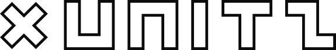

[ Woning ]
Vier gevels,
één unit
Dezelfde unit, vier gevelbeelden: noord, oost, zuid en west.
Fotografie van de gerealiseerde woning.


[ Systeem ]
Vijf units,
één kruis
Wonen, werken, slapen en natte cel rond een open midden.
Elke arm is een unit van 10 m².

- Maat
- 2,95 × 3,40 × 2,95 m
- Inhoud
- 30 m³
5 units
50 m²
1 cel = 1 unit10m²